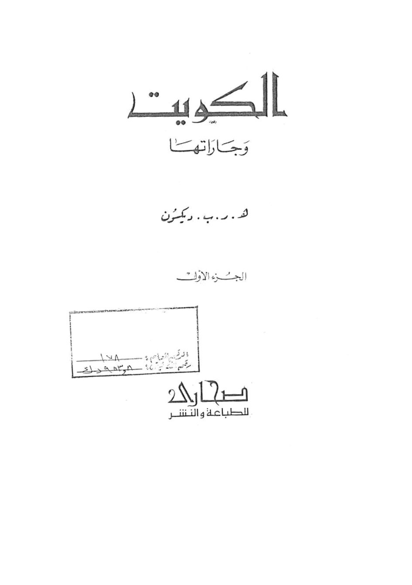
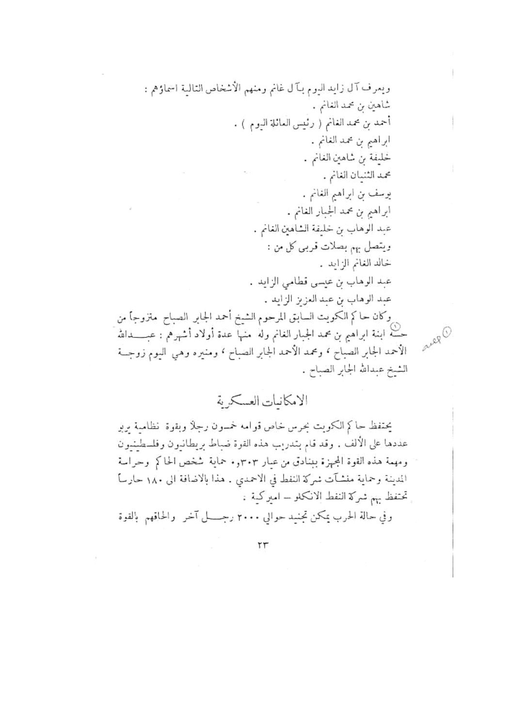

1956 (Arabic translation) · Book pages, H. R. P. Dickson, Al-Kuwait wa Jaratuha (Kuwait and Her Neighbours), Arabic translation, part 1, Dar Saud Al-Sabah for printing and publishing
H. R. P. Dickson, Kuwait and Her Neighbours: the Al-Qatamis among Al Zayed, and the baghla of Abdulwahab Al-Qatami in 1940
What it is
Page 23 says Al Zayed are known today as Al-Ghanim, lists their men (Shaheen, Ahmed, Ibrahim and Mohammed Al-Ghanim and others), and adds that closely related to them are Khalid Al-Ghanim Al-Zayed, «Abdulwahab bin Eissa Qatami Al-Zayed» and «Abdulwahab bin Abdulaziz Al-Zayed». Page 146 is Violet Dickson’s «Preparing for the voyage»: on 5 September 1940 she wrote, «the last touches have been put to the baghla owned by the rich nakhuda Abdulwahab Al-Qatami Al-Zayed before she leaves the harbour on today’s high tide», and describes some thirty men sewing her new sail behind the house of the pearl merchant Hilal Al-Mutairi.
Why it matters
Dickson places both Abdulwahabs, son of Eissa and son of Abdulaziz, in the Al Zayed kin group, and Violet Dickson records an Al-Qatami baghla sailing in 1940.
Page copies


Notes
Only the first pages are shown here. Family members who sign in can see all 3 pages.
Others named
Sources
H. R. P. Dickson, Al-Kuwait wa Jaratuha, Arabic translation, part 1, Dar Saud Al-Sabah, pages 23 and 146 (English original: Kuwait and Her Neighbours, London, 1956)
How this text was made: The 1940 passage names «Abdulwahab Al-Qatami Al-Zayed» without his father’s name. Abdulwahab Abdulaziz owned the baghla Al-Badri, so she is most likely Al-Badri, but the book does not say so. Page 104 does not concern the family and is not included.
Open in the interactive site